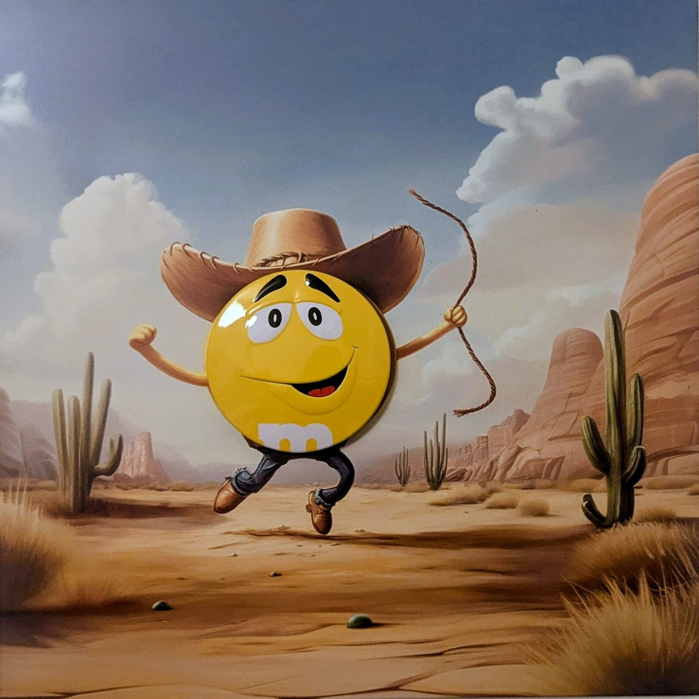
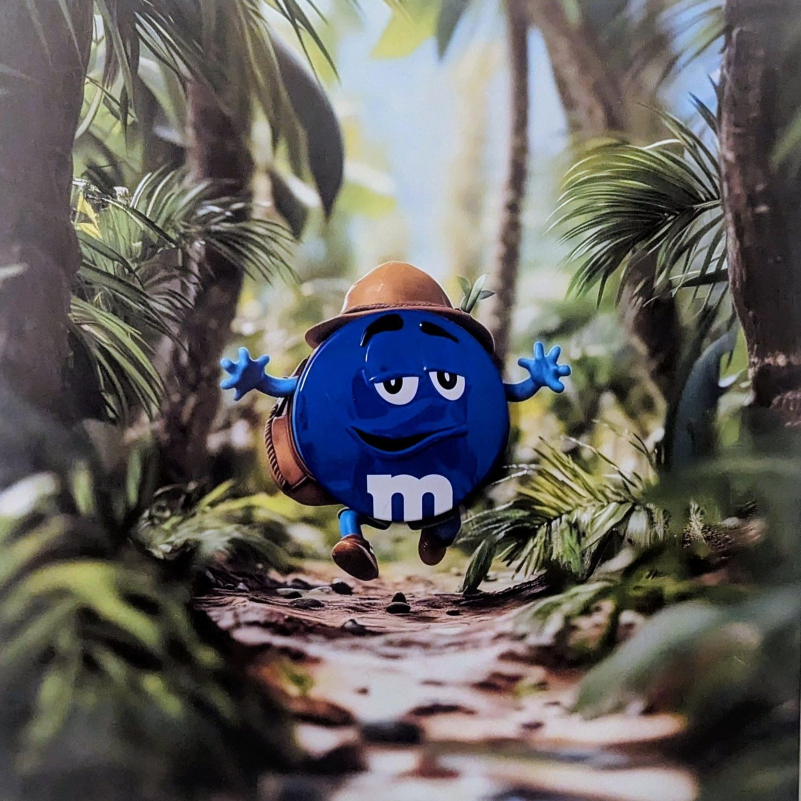
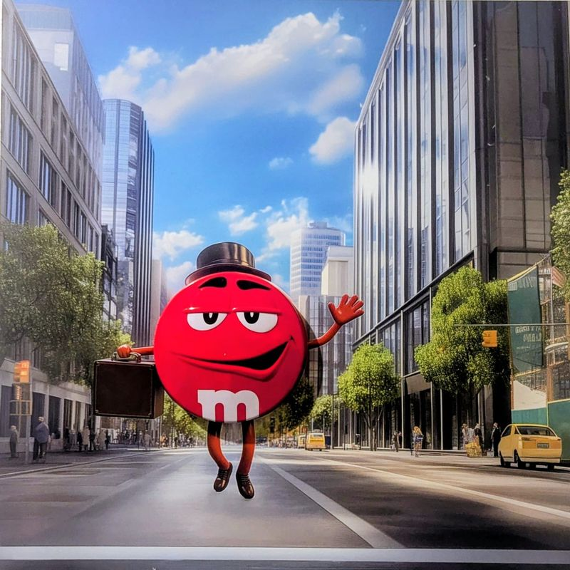
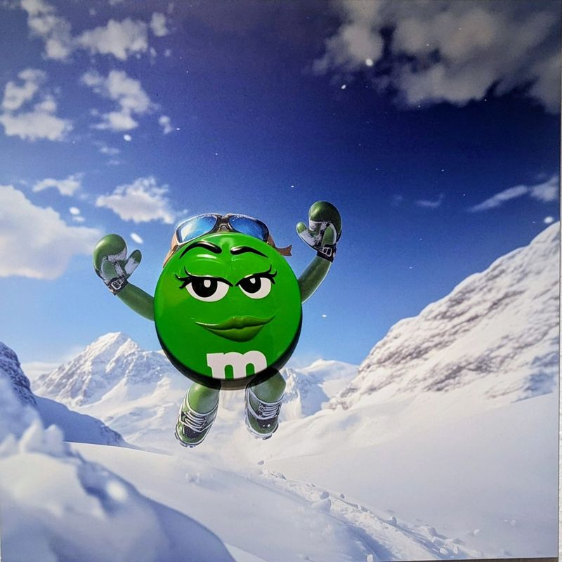
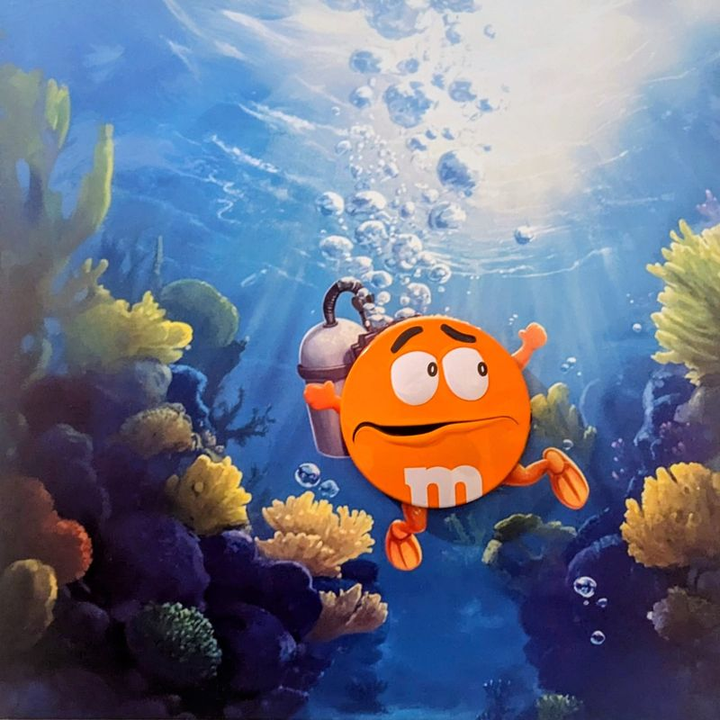
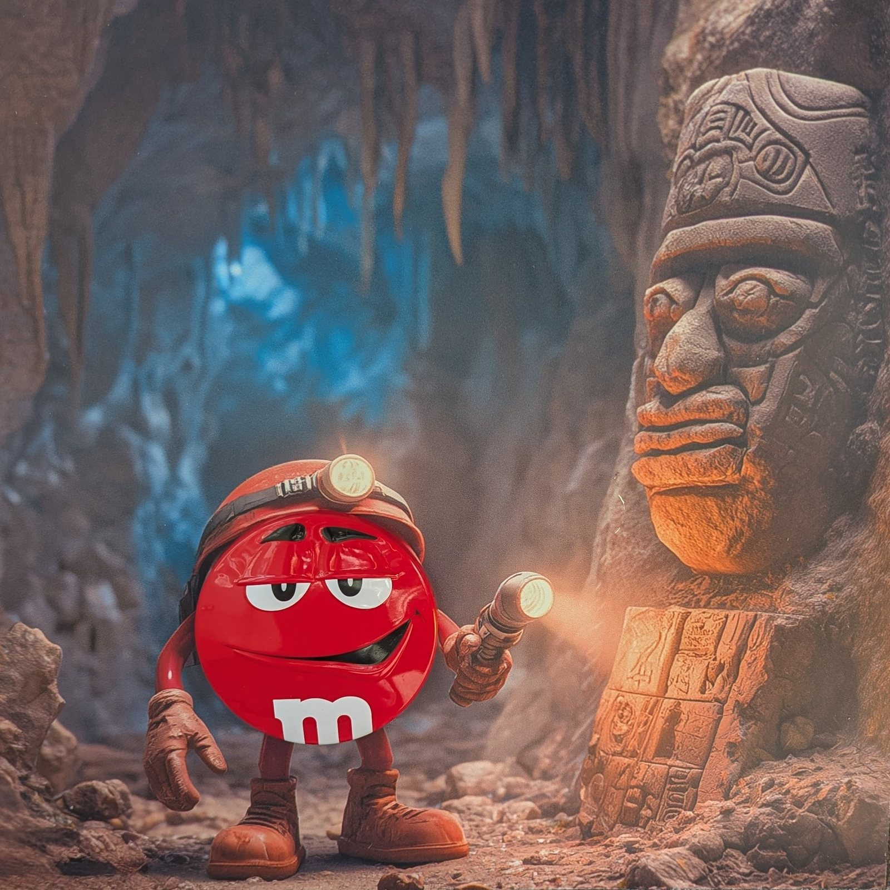
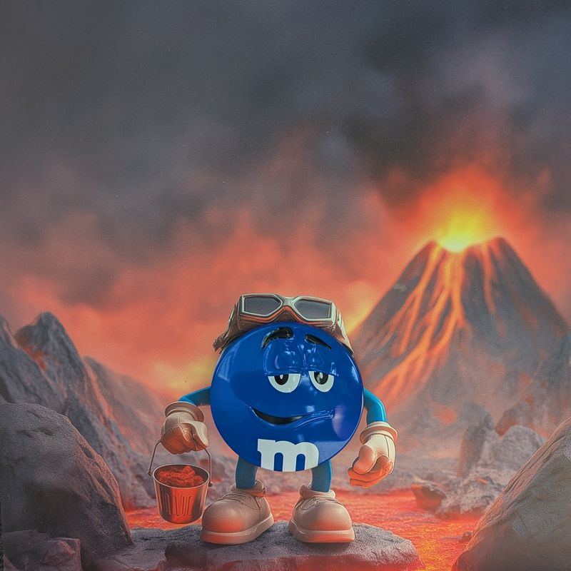
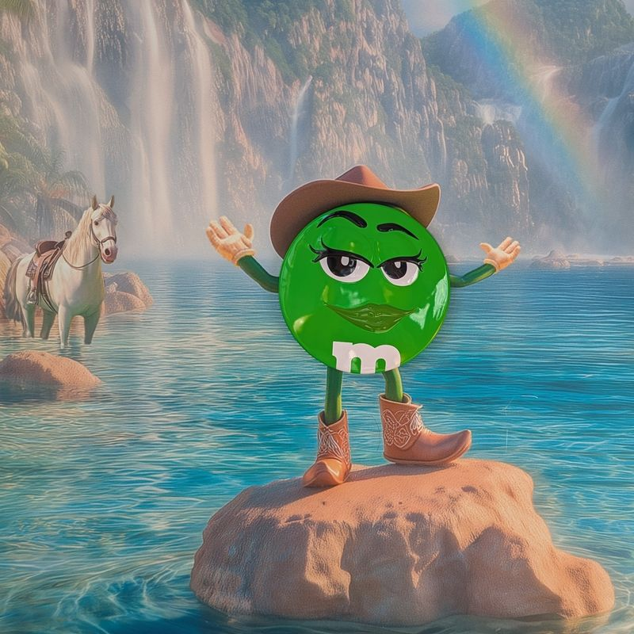
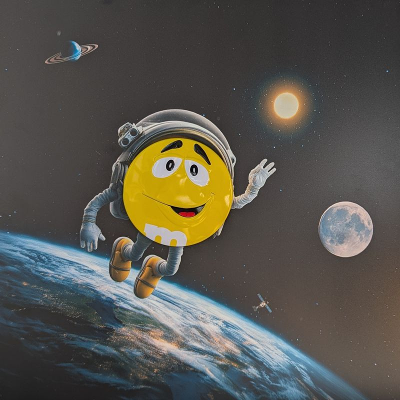

Works
Two series of five oil paintings, each preceded by dozens of pencil sketches, released as limited-edition prints on aluminium.
Series I · 2025
Environments
Five mascots thrown into worlds too big for them. For the first time, characters condemned to smile are allowed to be afraid, to doubt, to get lost.

IHe has no idea where he's going. He still brought a hat.

IILost, but in good shape.

IIIHe thinks he's at home everywhere. He's wrong, with great confidence.

IVShe doesn't ask anyone's permission. I envy her.

VAll the gear in the world, and still that face.
Series II · 2026
Elements
A stay in Kyoto and then Rishikesh led her to the Japanese Godai and the Vedic Pañca Bhūta. Each colour joins a primordial element.
The plane has left. It often does.

IIHe thought he was the first. Nobody is.

IIIHe stole fire from a volcano. For tea.

IVThe horse wasn't planned. It stayed.

VSame smile as in the desert. He learned nothing, and that's fine.